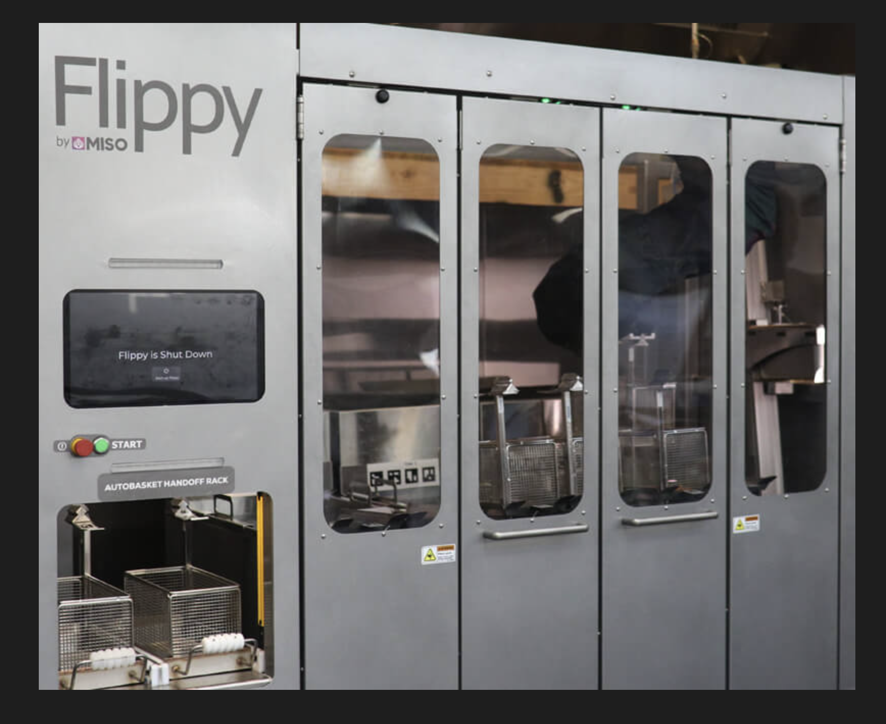
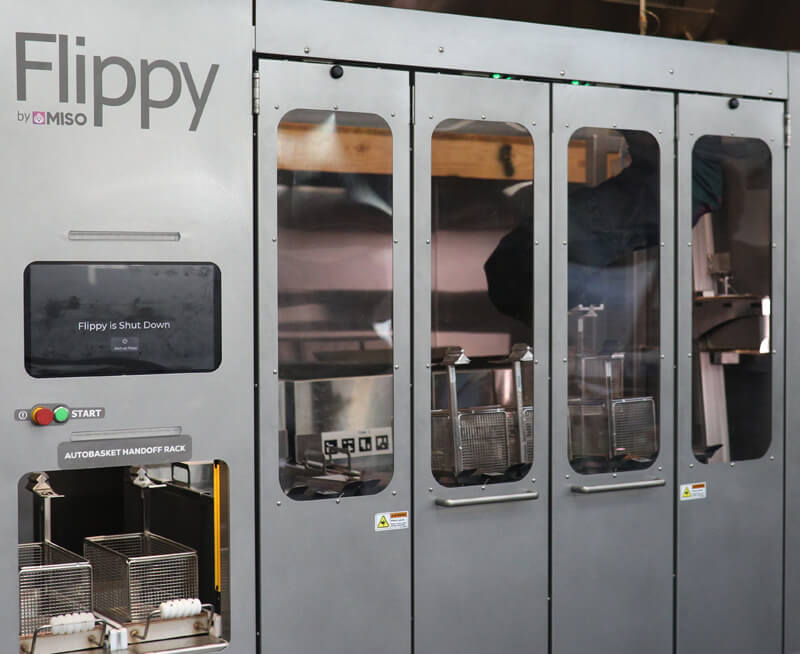
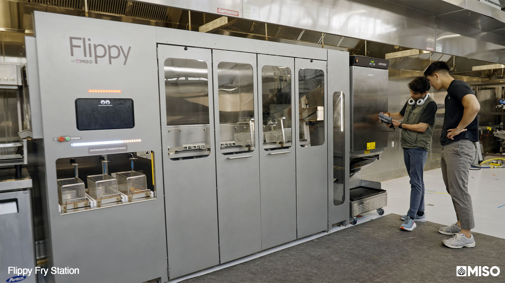

Miso Robotics
Flippy
Building the systems engineering function behind a commercially deployed kitchen robot.
Systems Engineer
July 2021 – Present
Flippy is Miso Robotics' robotic kitchen assistant, deployed in commercial restaurants to automate high-heat, repetitive cooking tasks like frying. I work at the boundary between mechanical, electrical, firmware, and software, the layer where most of the interesting failures actually happen, rather than on any single part of the robot itself.

Flippy deployed in a commercial kitchen
What I actually do
My job isn't building any one subsystem, it's making sure the subsystems agree with each other. I write the requirements and interface contracts that let cross-functional teams (mechanical, electrical, firmware, software) build against the same system instead of building against each other, then run the verification and validation that proves the result actually meets those requirements before it ships to a live kitchen.

Flippy hardware in the field

Test & validation environment
Functional safety
A robot working alongside people in a commercial kitchen has to clear a real safety bar, not just a performance one. That side of the role covers hazard analysis and risk assessment carried through to certification, most recently achieving Performance Level d under ISO 10218, the standard covering safety requirements for industrial robots working near people.
Where it stands
This is ongoing, active work: I'm currently building out the systems engineering function at Miso from the ground up, requirements management, V&V planning, and release readiness for a robot that's already deployed and running in production kitchens, not a lab prototype. This page is an early draft focused on what's safely public about the role; I'll expand it with more specifics over time.